Einleitung
Zweck
Dieses Dokument stellt das Handbuch der "Privacy Management Platform" dar. Es soll sowohl den Laien als auch den erfahrenen Benutzer und Entwickler bei der Verwendung der PMP unterstützen. Auf eine gute Verständlichkeit wird Wert gelegt.
Leserkreis
Das Handbuch richtet sich an folgende Lesergruppen:
- den unerfahrenen Benutzer
- den erfahrenen Benutzer
- den Entwicklern von Ressourcengruppen (für die PMP)
- den Entwicklern von Applikationen inkl. deren Service Features
- dem Kunden
- den Betreuern des Studienprojekts
Konventionen
In diesem Dokument werden mehrere Konventionen verwendet, um knapp, übersichtlich, lesbar und treffend zu sein:
- Für Überbegriffe wie Benutzer oder Entwickler wird das generische Maskulinum verwendet. Da die Deutsche Sprache hier keine zufrieden stellende Alternative kennt, sind damit selbstverständlich auch alle weiblichen Leserinnen angesprochen.
- In diesem Dokument wird die deutsche Sprache verwendet; dabei ist allerdings zu beachten, dass sich übernommene oder übersetzte Begriffe aus dem Englischen nicht vermeiden lassen. Diese werden dann jedoch grammatikalisch an die Deutsche Sprache angepasst.
- Ein Verweis in diesem Dokument auf andere Kapitel wird so dargestellt:
Gliederung
Der besseren Übersicht wegen unterteilt sich das Handbuch in die einzelnen Benutzergruppen:
- "" richtet sich an Benutzer, die die PMP verwenden möchten. Dieses Kapitel enthält eine Beschreibung aller im einfachen Modus () verfügbaren Funktionen, sowie eine Beschreibung der Funktionen, die erst im Expertenmodus () verfügbar sind.
- "" richtet sich an Benutzer, die Ressourcengruppen oder Applikationen für die PMP entwickeln möchten. Der Unterabschnitt "" geht auf die Erstellung von Ressourcengruppen ein. Dagegen beschriebt "" wie Service Features definiert und in eigene Applikationen integriert werden können.
Grundbegriffe
Dieser Abschnitt erläutert einige Grundbegriffe die im Kontext der PMP verwendet werden.
Ressourcen & Privacy Settings
Ressourcen bieten Anwendungen Zugriff auf die verschiedenen Funktionen eines Android-Gerätes. In der PMP werden einzelne, inhaltlich zusammengehörige Ressourcen in Ressourcengruppen zusammengefasst. Diese Gruppen können dann auf dem Gerät installiert werden.
Jede Ressource definiert mehrere so genannte Privacy Settings. Diesen können verschiedene Werte zugewiesen werden (etwa erlauben oder nicht). Abhängig vom gesetzten Wert ist ein Zugriff auf eine Funktion der Ressource möglich (ist etwa des Privacy Setting "Datei lesen" gesetzt, das Setting "Datei schreiben" jedoch nicht, so erlaubt die Ressource "Dateisystem" nur das Auslesen einer Datei, nicht jedoch das Schreiben in eine Datei).
Service Features
Jede PMP-Applikation legt fest, welche Funktionen bestimmter Ressourcen sie benötigt und welche Dienste sie hierfür dem Benutzer anbietet. Diese Vereinbarung wird als Service Feature bezeichnet. Eine Applikation besitzt in der Regel mehrere Service Features.
Im Detail legt jedes Service Feature fest, welche Ressourcen, und welche Funktionen dieser Ressource, benötigt werden. Im Gegenzug bietet die Applikation dem Anwender für den Zugriff auf diese Ressource bzw. dieser Funktion bestimmte Funktionalitäten an.
Es können bei Bedarf mehrere Service Features gleichzeitig aktiviert werden, wodurch der Funktionsumfang der Applikation erweitert werden kann.
Presets
Über die Presets können mehrere Service Features zusammengefasst und somit bei Bedarf gemeinsam aktiviert oder deaktiviert werden.
Systemanforderungen
Um PMP installieren und ausführen zu können, muss auf dem Zielgerät mindestens Android in der Version 2.1.1 installiert sein. Weitere Anforderungen werden vom Basissystem der PMP nicht gestellt. Es ist jedoch möglich, dass bestimmte Ressourcen Funktion benötigen, die nicht auf allen Geräten verfügbar sind (z. B. aktive GSM-Verbindung oder GPS-Ortung). In der Beschreibung der jeweiligen Ressourcen finden Sie in der Regel Informationen über deren Systemanforderungen.
Anwender
Dieser Abschnitt richtet sich an die Benutzer der PMP.
Installation
Die PMP wird wie eine gewöhnliche Android-Applikation installiert. Hierzu wird entweder die apk-Datei der PMP-Anwendung auf das Gerät übertragen, oder die PMP wird aus dem Android Market ausgewählt. Folgen Sie anschließend bitte den Anweisungen des Android-Betriebssystems.
Sprache
Die Beschriftung der Elemente der Benutzeroberfläche erfolgt in der Sprache, die als Geräte-Sprache in Android festgelegt ist. Gegenwärtig enthält die PMP nicht für jede Sprache eine passende Übersetzung. Sollte keine Übersetzung in der gewählten Gerätesprache vorhanden sein, erfolgt die Beschriftung der Benutzeroberfläche in englischer Sprache.
Da, wie bereits erwähnt, die Standard-Beschriftung auf Englisch erfolgt, wird auch in den Bildschirmfotos und bei der Benennung der Schaltflächen in den folgenden Abschnitten die englische Variante verwendet.
Hauptmenü
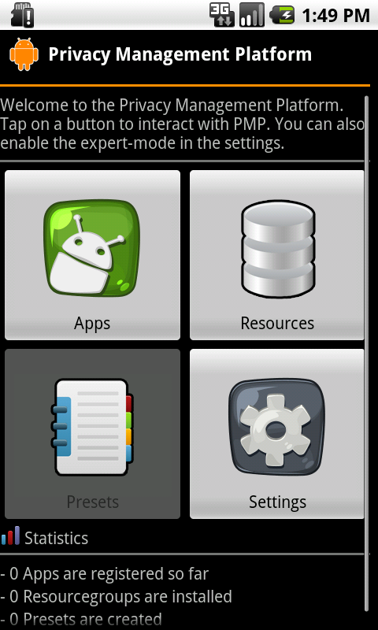{kind=link}
Ausgangspunkt der Verwendung der PMP bildet das Hauptmenü, das sich beim Starten der Anwendung öffnet. Dieses bietet Ihnen Zugriff auf alle Funktionen der PMP:
- Anzeigen und Verwalten aller installierter Applikationen über die Schaltfläche "Apps" (siehe ).
- Anzeigen und Verwalten aller installierten Ressourcen über die Schaltfläche "Resources" (siehe ).
- Anzeigen und Verwalten der Presets aller installierten Applikationen über die Schaltfläche "Presets" (siehe ). Diese Funktion steht nur bei aktiviertem Expertenmodus zur Verfügung.
- Ändern der Einstellungen der PMP über die Schaltfläche "Settings" (siehe ).
Unterhalb der Schaltflächen werden Informationen über die Anzahl der installierten Applikationen und Ressourcen sowie der erstellten Presets angezeigt. Eine Angabe der installierten PMP-Version folgt unterhalb dieser Informationen.
Anwender-Modi
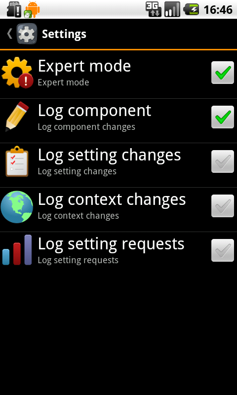{kind=link}
Die PMP lässt sich in zwei Modi betreiben: Im einfachen Modus (als Simple Mode bezeichnet), stehen dem Benutzer die wichtigsten Funktionen zur Verfügung. Werden alle Funktionen benötigt, lässt sich das System in den Expertenmodus (Expert Mode) schalten.
Modus-Wechsel
Der Wechsel zwischen einfachem Modus und Expertenmodus erfolgt über den Einstellungs-Dialog der PMP. Dieser wird über die Schaltfläche "Settings" im Hauptmenü aufgerufen. Über die dort vorhandene Schaltfläche "Expert mode" lässt sich der Expertenmodus aktivieren bzw. deaktivieren.
Befindet sich die PMP im Expertenmodus, erscheint ein Häkchen im rechten Bereich der Schaltfläche. Durch Antippen der Schaltfläche wird zwischen den Modi hin- und her gewechselt.
Einfacher Modus (Simple Mode)
Der einfache Modus ist auf Anwender mit geringen Kenntnissen angepasst. Daher enthält er nur die wichtigsten Funktionen um den Benutzer nicht zu überfordern.
Expertenmodus (Expert Mode)
Der Expertenmodus gibt Zugriff auf alle Funktionen der PMP. Da sich daher unerfahrene Benutzer überfordert fühlen könnten, richtet sich dieser Modus an erfahrene Benutzer, die vollen Zugriff auf den Funktionsumfang haben möchten.
Die Abgrenzung zwischen den beiden Modi erfolgt in der nachfolgenden Beschreibungen durch Hinweise der Form "Expertenmodus:". Die diesem Hinweis folgenden Funktionen sind ausschließlich im Expertenmodus verfügbar.
Bei aktiviertem Expertenmodus kann das Protokollieren von bestimmten Ereignissen, wie etwa beim Ändern von Kontexten, aktiviert werden.
Applikationen
Applikationen installieren
Die Installation von PMP-Applikationen unterscheidet sich nicht von der Installation gewöhnlicher Applikationen. Im Allgemeinen benötigen PMP-Applikationen selbst keine Zugriffsrechte auf System-Funktionen, da diese Zugriffe über die PMP-Ressourcengruppen erfolgen.
Installierte Applikationen anzeigen & Aktionenmenü
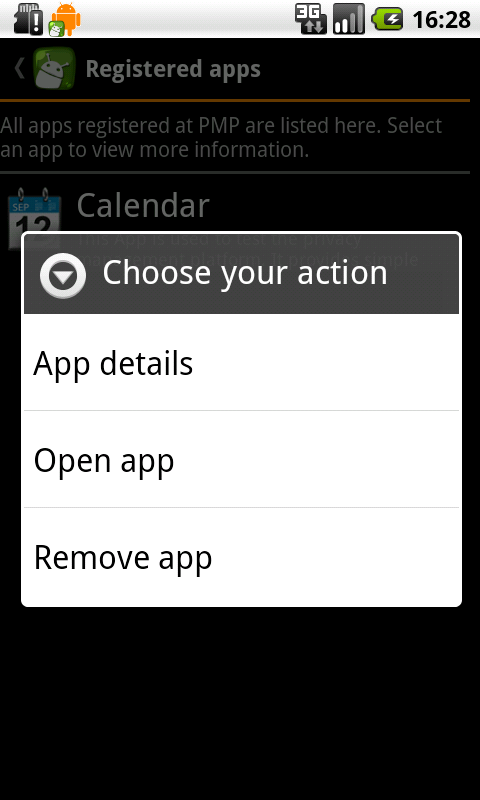{kind=link}
Über die Schaltfläche "Apps" im Hauptmenü der PMP lassen sich alle momentan auf dem Gerät installierten PMP-Applikationen anzeigen. Durch das Antippen einer Anwendung erhalten Sie weitere Informationen zu dieser Applikation. Durch langes Drücken auf eine Applikation öffnet sich das zugehörige Aktionsmenü. Über dieses können weitere Aktionen vorgenommen werden (siehe folgende Kapitel).
Details zur Applikation anzeigen
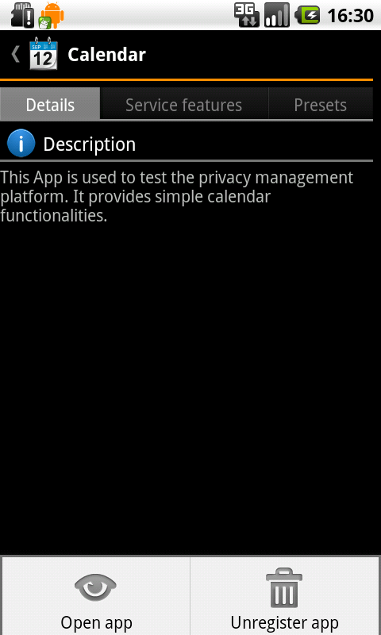{kind=link}
Über den Eintrag "App details" des Aktionenmenüs (siehe ) oder durch kurzes Antippen einer Applikation in der Applikationenliste lassen sich weitere Informationen über die entsprechende Applikation anzeige. Der hierdurch geöffnete Dialog unterteilt sich in drei Bereiche, die über die Reiter zugänglich sind:
- Unter "Description" werden detaillierte Informationen über die betreffende Anwendung angezeigt
- Unter "Service Features" werden alle von der Applikation angebotene Service Features angezeigt und das Ändern dieser ermöglicht (siehe )
- Unter "Presets" werden alle der Applikation zugewiesene Presets angezeigt. Zudem ist es dort möglich, weitere Presets zu erstellen oder bestehende zu ändern (siehe )
Über das dem Reiter "Details" zugeordnete Menü (Gerätetaste "Menü") kann die Applikation direkt gestartet bzw. geöffnet oder aus der PMP entfernt werden siehe ).
Applikationen deinstallieren
Das Entfernen der Applikation aus der PMP erfolgt über den Eintrag "Remove app" des Aktionsmenüs (siehe ) oder durch den Menü-Eintrag "Unregister app" (siehe ), wodurch die Applikation aus der PMP entfernt wird. Durch erneutes Starten der Applikation über die Applikationenauswahl von Android lässt sich die Applikation wieder in der PMP registrieren.
Die eigentliche Deinstallation der PMP-Applikationen, d. h. das endgültige Entfernen der Applikation vom Gerät, erfolgt wie bei gewöhnlichen Applikationen (über die Deinstallationsfunktion von Android).
Service Features anzeigen & einstellen
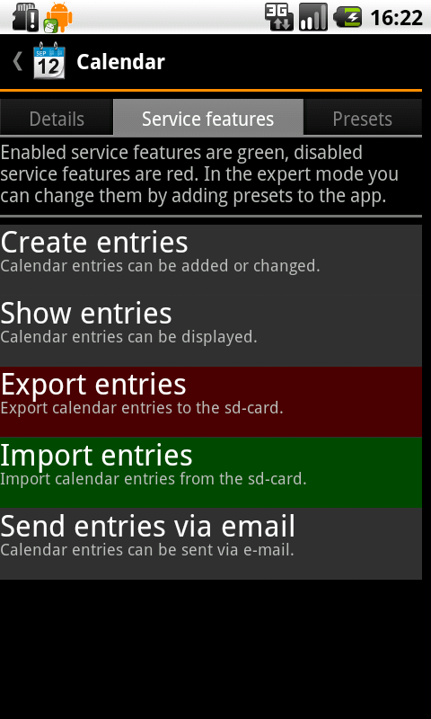{kind=link}
Alle Service Features, die von einer Applikation angeboten werden, lassen sich durch Antippen der entsprechenden Applikation und Auswahl des Reiters "Service Features" anzeigen. Service Features, die gegenwärtig aktiviert sind, werden grün unterlegt, deaktivierte Service Features rot. Service Features, die eine momentan nicht installierte Ressource benötigen werden grau unterlegt.
Durch Antippen eines Service Features werden weitere Informationen angezeigt. Sollte eine vom Service Feature benötigte Ressource nicht vorhanden sein (über die Schaltfläche "View missing resouces" können diese abgefragt werden), kann diese über die Schaltfläche "1-Click Install" automatisch über das Internet herunter geladen und auf dem Gerät installiert werden.
Einfacher Modus: Sind alle benötigten Ressourcen installiert, kann das Service Feature nun über die Schaltfläche "Enable" aktiviert werden bzw. wenn es bereits aktiviert ist, über die Schaltfläche "Disable" deaktiviert werden. Dieser Dialog zeigt eine Auflistung aller Ressourcen an, die vom entsprechenden Service Feature benötigt werden. Zu jeder Ressource werden die vom Service Feature gesetzten Privacy Settings angezeigt, wobei mit Haken diejenigen markiert werden, die momentan bereits aktiviert sind. Mit einem X werden Privacy Settings markiert, die noch nicht aktiv sind, jedoch beim aktivieren des Service Features aktiviert werden.
Expertenmodus: Sind alle benötigten Ressourcen installiert, dann können die vom Service Feature angeforderten Privacy Settings einem existierenden Preset hinzugefügt oder hieraus ein neues Preset angelegt werden.
Von Service Features benötigte Ressourcen lassen sich bei Bedarf auch manuell über die Ressourcen-Liste installieren (siehe ). Wurden die fehlenden Ressourcen installiert, kann der Service Feature-Dialog erneut geöffnet und ein nun neu verfügbares Service Feature ausgewählt werden.
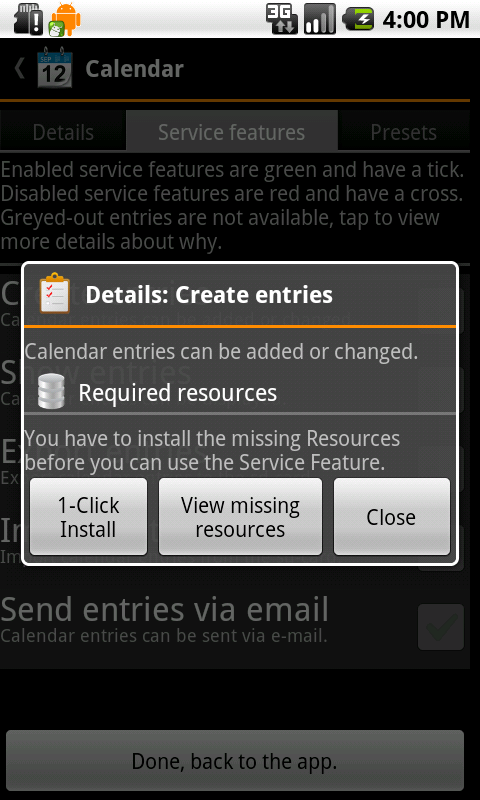{kind=link}
Neben dem Setzen der Service Feature durch das manuelle Auswählen der Applikation, lassen sich die Service Features auch auf folgende Arten einstellen:
- Beim ersten Starten der Applikation, wobei anschließend über die Schaltfläche "Set initial Service Features" automatisch der obige Dialog geöffnet wird
- Beim Aufrufen einer Funktion innerhalb der Applikation, die ein bestimmtes Service Feature benötigt, das noch nicht aktiviert ist. Hierbei wird ein Abfrage-Dialog angezeigt, der den Benutzer auf das nicht aktivierte Service Feature hinweist. Über die Schaltfläche "Select Service Feature" lässt sich dann über den obigen Dialog das Service Feature ändern
Presets
Expertenmodus: Diese Funktionen sind nur zugänglich, wenn der Expertenmodus aktiviert ist.
Presets anzeigen, löschen & Aktionsmenü
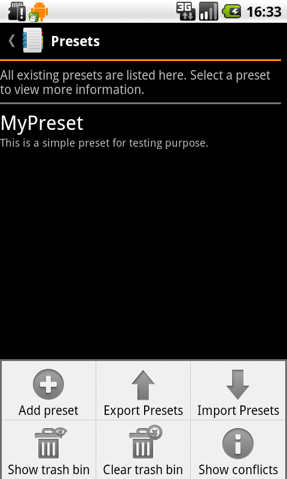{kind=link}
Über die "Presets"-Schaltfläche im Hauptmenü werden alle gegenwärtig erstellten Presets angezeigt. Durch ein langes Drücken auf ein Preset öffnet sich das zugehörige Aktionsmenü. Über dieses kann der Name und die Beschreibung des Presets geändert, oder das Preset gelöscht werden. Durch kurzes Tippen auf ein Preset werden alle Details zu diesem angezeigt. Diese beinhalten die dem Preset zugewiesenen Applikationen (unter dem Reiter "Apps") sowie die zugewiesenen Privacy Settings (unter dem Reiter "Privacy Settings"). Die Privacy Settings werden hierbei nach ihrer zugehörigen Ressource gruppiert. Um die Privacy Settings einer Ressource anzuzeigen, muss auf die entsprechende Ressource getippt werden.
Presets werden durch das Löschen zunächst in den Papierkorb verschoben, so dass sie sich später wiederherstellen lassen. Über den Eintrag "Clear trash bin" in dem der Preset-Liste zugeordneten Menü (Geräte-Taste "Menü") kann der Papierkorb bei Bedarf geleert werden, wodurch die gelöschten Presets endgültig entfernt werden.
Presets im- und exportieren
Alle momentan angelegten Presets lassen sich auf einen Webserver exportieren, über den sie sich später wiederherstellen lassen. Hierüber ist z. B. auch eine Übertragung der Presets auf ein anderes Gerät möglich.
Der Export wird über die Schaltfläche "Export Presets" in dem der Preset-Liste zugeordneten Menü (Geräte-Taste "Menü") gestartet. Anschließend werden alle Presets durch Antippen ausgewählt, die exportiert werden sollen. War der Export erfolgreich, wird anschließend eine ID angezeigt. Diese sollten Sie sich notieren, da sie für das spätere Importieren benötigt wird.
Wurden alle Presets erfolgreich auf den Server übertragen, können diese über die Schaltfläche "Import Presets" im Menü wiederhergestellt werden. Hierzu muss zunächst die ID, die beim Export angezeigt wurde, angegeben werden. Ist diese gültig, werden die Presets wiederhergestellt. Sollte es bereits Presets auf dem Gerät geben, die denselben Namen wie eines der zu importierenden Presets haben, dann werden diese in einem weiteren Dialog aufgelistet. Durch Auswahl der entsprechenden Einträge kann bestimmt werden, ob die bestehenden Presets um die importierten Daten erweitert und ggf. überschrieben werden sollen.
Preset hinzufügen
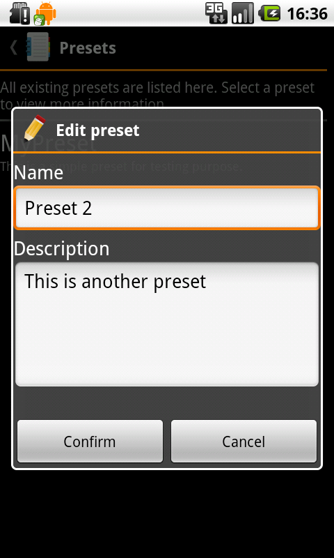{kind=link}
Das der Preset-Liste zugeordnete Menü (Geräte-Taste "Menü") ermöglicht mit "Add Preset" das Hinzufügen bzw. Erstellen weiterer Presets. Anschließend öffnet sich ein Dialog, in dem der Name und die Beschreibung des neuen Presets festgelegt werden können. Nach dem Bestätigen öffnet sich automatisch der unter genannte Dialog, über den das neu erstellte Preset konfiguriert werden kann.
Preset ändern
Applikationen
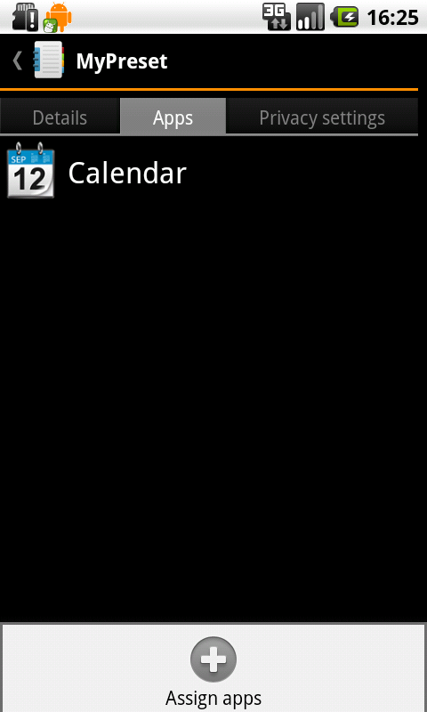{kind=link}
Im Details-Dialog des entsprechenden Presets (durch kurzes Antippen des gewünschten Presets in der Preset-Liste) können innerhalb des Reiters "Apps" weitere Applikationen dem Preset hinzugefügt werden. Hierzu wird das Menü (Geräte-Taste "Menü") geöffnet und die Schaltfläche "Assign app" angetippt. In der sich darauf öffnenden Applikationen-Liste werden die gewünschten Applikation durch Antippen selektiert, wobei gegenwärtig selektierte Applikationen grün hinterlegt werden. Über "Confirm" werden die selektierten Applikation schließlich dem Preset hinzugefügt.
Details zur Applikation anzeigen: Durch Tippen auf eine Applikation und anschließendes Tippen auf "Show Details" im sich öffnenden Aktionsmenü lassen sich weitere Informationen zur entsprechenden Applikation anzeigen (siehe ).
Applikation aus Preset entfernen: Durch Tippen auf eine Applikation und anschließendes Tippen auf "Remove" im sich öffnenden Aktionsmenü wird die gewählte Applikation aus dem Preset entfernt.
Privacy Settings
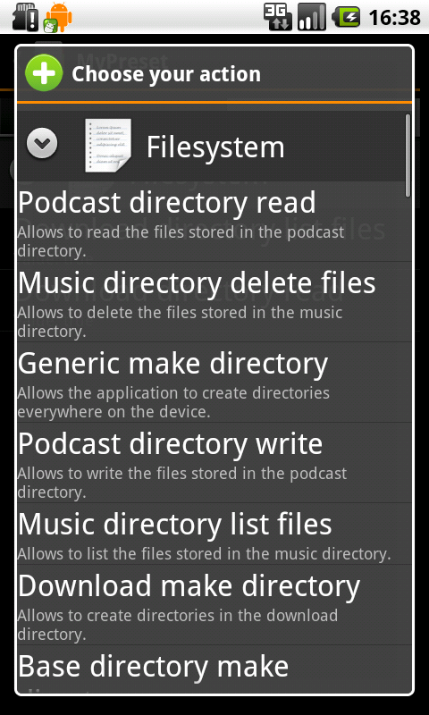{kind=link}
Sollen weitere Privacy Settings hinzugefügt werden, so muss zunächst in den Reiter "Privacy Settings" gewechselt werden. Durch Aufrufen des Menüs (Geräte-Taste "Menü") und Auswahl der Schaltfläche "Assign Privacy Setting" werden alle momentan installierte Ressourcen angezeigt. Die zu einer Ressource gehörenden Privacy Settings werden angezeigt, indem die entsprechende Ressource durch Antippen "aufgeklappt" wird. Durch Antippen eines hierdurch angezeigten Privacy Settings wird dieses dem Preset hinzugefügt.
Mock- und Cloak-Daten: Jede Ressource verfügt über ein spezielles Privacy Setting "Mode". Über dieses lässt sich festlegen, wie die Daten aussehen, die die App erhält:
- Normal: Die Applikation erhält korrekte Daten
- Mock: Die von der Ressource gelieferten Daten entsprechen nicht der Realität oder wurden verändert. Die Applikation kann erfragen, ob dieser Modus aktiv ist und ggf. ihr Verhalten anpassen
- Cloak: Die von der Ressource gelieferten Daten entsprechen nicht der Realität, sondern werden z. B. zufällig generiert. Die Applikation erfährt allerdings nicht, dass der Cloak-Modus aktiv ist und kann daher nicht erkennen, dass die Daten nicht real sind
Das nachfolgende Bedienkonzept unterscheidet sich je nach dem, ob das Privacy Setting über Kontexte verfügt oder nicht (erkennbar am Pfeil "^" rechts des Namens, siehe auch ).
Privacy Setting Details: Durch Tippen auf ein Privacy Setting und anschließendes Tippen auf "Show Details" im sich öffnenden Aktionsmenü (keine Kontexte vorhanden) bzw. auf die erste Schaltfläche von Links in der sich öffnenden Kontext-Liste, lassen sich weitere Informationen zum entsprechende Privacy Setting anzeigen.
Privacy Setting ändern: Durch Tippen auf ein Privacy Setting und anschließendes Tippen auf "Change value" im sich öffnenden Aktionsmenü (keine Kontexte vorhanden) bzw. auf die zweite Schaltfläche von Links in der sich öffnenden Kontext-Liste, lässt sich das entsprechende Privacy Setting verändern (z. B. aktivieren/deaktivieren).
Kontext dem Privacy Settings hinzufügen: Durch Tippen auf ein Privacy Setting und anschließendes Tippen auf "Add context" im sich öffnenden Aktionsmenü (keine Kontexte vorhanden) bzw. auf die dritte Schaltfläche von Links in der sich öffnenden Kontext-Liste, lässt sich dem entsprechenden Privacy Setting ein Kontext hinzufügen. Details hierzu unter .
Privacy Setting aus Preset entfernen: Durch Tippen auf ein Privacy Setting und anschließendes Tippen auf "Remove" im sich öffnenden Aktionsmenü (keine Kontexte vorhanden) bzw. auf die vierte Schaltfläche von Links in der sich öffnenden Kontext-Liste, wird das gewählte Privacy Settings aus dem Preset entfernt.
Kontext
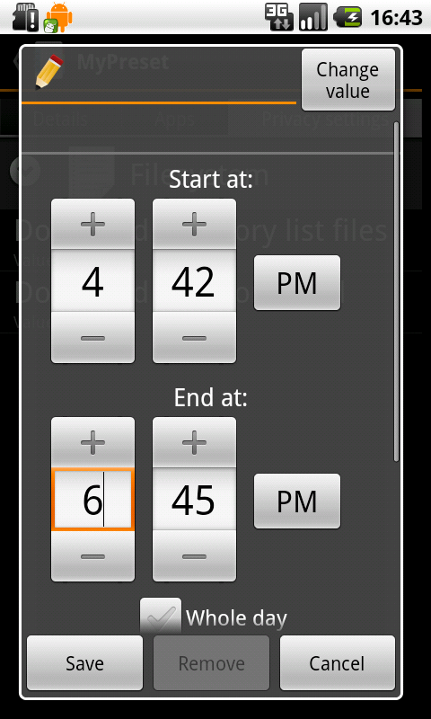{kind=link}
Über Kontexte lassen sich Privacy Settings automatisch abhängig von externen Bedingungen aktivieren bzw. deaktivieren (z. B. wenn ein Privacy Setting nur an Werktagen aktiv sein soll). Gegenwärtig sind zwei Kontext-Typen verfügbar: Zeitpunk bezogene Kontexte ("Time context") sowie Standpunkt bezogene Kontexte ("Location context"). Über die Schalfläche "Change value", die beim Festlegen des Kontextes (siehe unten) im oberen rechten Bereich angezeigt wird, kann der Wert bestimmt werden, den das Privacy Setting annehmen soll, wenn der Kontext aktiv ist (d. h. wenn die spezifizierte Bedingungen erfüllt sind). Über den bei vorhandenen Kontexten rechts des Namens des Privacy Settings angezeigten Pfeil "^" lässt sich erkennen, ob das Privacy Setting bereits über Kontexte verfügt.
Hinzufügen: Verfügt das Privacy Setting bereits über einen Kontext, so muss die Kontext-Liste zunächst durch Antippen des Privacy Settings aufgeklappt werden. Anschließend kann über die "+"-Schaltfläche ein weiterer Kontext hinzugefügt werden. Verfügt das Privacy Setting noch nicht über einen Kontext, so kann durch Antippen des Privacy Settings und Auswahl des Eintrags "Add context" ein neuer Kontext hinzugefügt werden. In beiden Fällen wird anschließend ein Auswahldialog angezeigt, in dem der gewünschte Kontext-Typ ausgewählt wird. Darauf folgend wird der Kontext spezifiziert und dem Privacy Setting hinzugefügt.
Ändern: Verfügt das Privacy Setting bereits über einen Kontext, so kann dieser jederzeit geändert werden. Hierzu wird zunächst die Kontext-Liste aufgeklappt (durch Tippen auf das entsprechende Privacy Setting). Anschließen können durch Antippen des Kontexts dessen Parameter geändert werden.
Konflikte
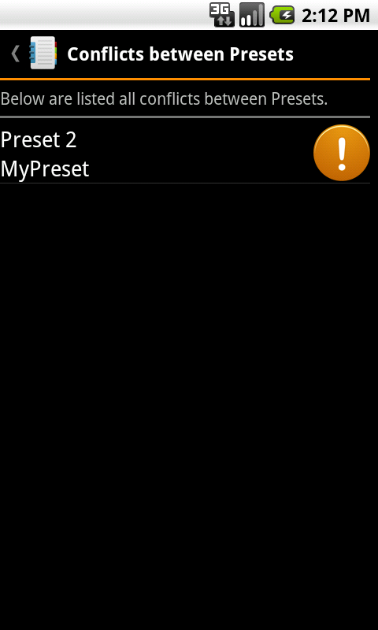{kind=link}
Existieren mehrere Presets, denen die gleiche Applikation zugewiesen wurde, könnten zwischen gleichartigen Kontexten Konflikte entstehen. Etwa, wenn solchen Preset für das gleiche Privacy Setting sich überschneidende Zeitkontexte mit unterschiedlichen Werten zugewiesen wurden. Existiert ein solcher Konflikt, wird in der Privacy Setting-Liste des jeweiligen Presets neben dem entsprechenden Kontext ein Ausrufezeichen angezeigt.
Über den Eintrag "Show conflicts" in dem der Preset Liste (siehe ) zugeordneten Menü lassen sich alle Konflikte berechnen und übersichtlich darstellen.
Ressourcen
Ressourcen installieren
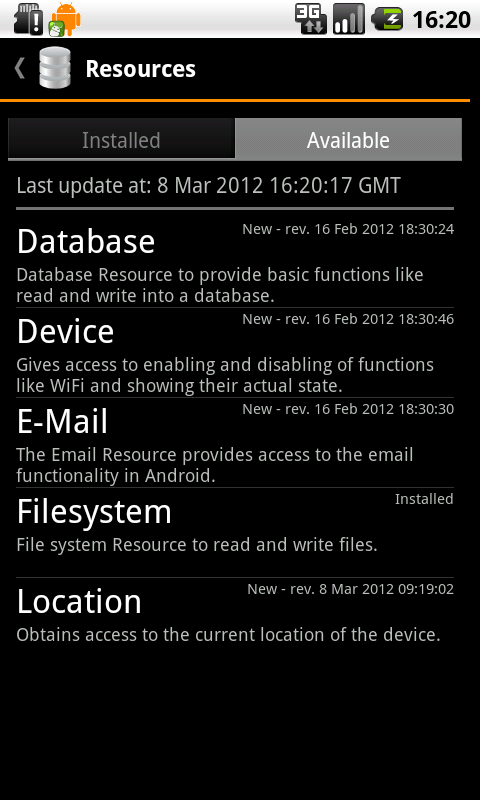{kind=link}
PMP-Ressourcen werden über den integrierten Marktplatz installiert. Dieser ist über die Schaltfläche "Resources" im Hauptmenü und anschließender Auswahl des Reiters "Available" zugänglich. Dort werden alle gegenwärtig online verfügbaren Ressourcen angezeigt (Dies setzt eine bestehende Internetverbindung voraus).
Durch Tippen auf eine Ressource werden weitere Informationen über diese angezeigt. Anschließend kann die Ressource über die Schaltfläche "Install" auf dem Gerät installiert werden und steht dann anderen Applikationen zur Verfügung.
Ressourcen anzeigen und deinstallieren
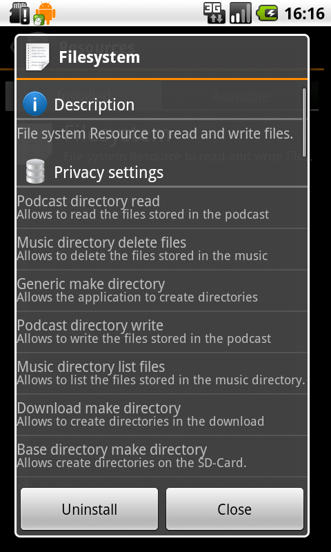{kind=link}
Über die Schaltfläche "Resources" im Hauptmenü lassen sich unter dem Reiter "Installed" alle auf dem Gerät installierten Ressourcen anzeigen. Durch Antippen einer Ressource werden weitere Informationen über diese angezeigt.
Der Details-Dialog, der beim Antippen einer Ressource erscheint, ermöglicht zudem das einfache Deinstallieren der entsprechenden Ressource. Hierzu genügt ein Tippen auf die Schaltfläche "Uninstall". Anschießend wird die Ressource vom Gerät entfernt. Wird die Ressource später nochmals benötigt, lässt sie sich über den Marktplatz wieder installieren.
Entwickler
Dieser Abschnitt richtet sich an erfahrene Benutzer, die die PMP um eine weitere Sprache erweitern, eine Ressource erstellen oder Anwendungen an die PMP anbinden möchten.
Sprache hinzufügen
Die PMP besitzt momentan nur Beschriftungen in englischer Sprache. Alle Strings, die für Benutzerelemente verwendet werden, werden gemäß dem Android-SDK in eine eigene String-Ressource ausgelagert.
Um die PMP um eine weitere Sprache erweitern zu können, muss deren
Quellcode zunächst herunter geladen werden. Danach wird im Verzeichnis
res ein neues Unterverzeichnis values-XY angelegt,
wobei XY für das Kürzel der Sprache steht, die hinzugefügt werden
soll. Wurde das Verzeichnis angelegt, sollte aus dem values
Verzeichnis (unter res) die Datei strings.xml
in das neu angelegte Verzeichnis kopiert werden. Diese Kopie kann
dann mit einem Editor geöffnet und die einzelnen Abschnitte
übersetzt werden. Weitere Informationen zu String-Ressoucen finden Sie
in der Dokumentation des Android-SDK.
Nach Fertigstellung der Übersetzung werden mit Hilfe des Android-SDK die PMP und ihre Ressourcen zu einer neuen APK-Datei gebunden (siehe die Dokumentation des SDK für weitere Details). Diese Datei kann nun auf das Gerät übertragen werden.
Ressourcen
Inhaltlich zusammengehörende Ressourcen werden in der PMP intern in einer Ressourcengruppe zusammengefasst. Diese Ressourcengruppe kann dann als Ganzes ausgeliefert und auf dem Gerät installiert werden. Das Erstellen einer Ressourcengruppe und deren Ressourcen gliedert sich in folgende Schritte:
- Bestimmen und Implementieren einzelner Ressourcen (z. B. jeweils eine Ressource um eine Datei in verschiedenen Bereichen des Geräts zu lesen, schreiben oder zu löschen)
- Festlegen einer Ressourcengruppe (z. B. Dateisystemzugriff) und Hinzufügen der erstellten Ressourcen zu dieser
- Definieren der zu der erstellten Ressourcengruppe passenden Privacy Settings (z. B. Dateien auf der SD-Karte schreiben oder in allen Bereichen lesen)
- Hinzufügen der Privacy Settings zu der Ressourcengruppe
Alle für das Erstellen einer Ressourcengruppe benötigten Klassen befinden sich im Paket
de.unistuttgart.ipvs.pmp.resource der API-Bibliothek.Neben den implementierten Klassen beinhaltet eine Ressourcengruppe zusätzlich eine Definitions-Datei. Diese XML-Datei (typischerweise im
asset
Ordner abgelegt) beinhaltet neben den Privacy Settings der Gruppe auch
Informationen (u. a. Name und Beschreibung) über diese.
Der PMP liegen mehrere Ressourcengruppen und deren Quellcode bei. Diese können als Referenz für das Erstellen eigener Ressourcengruppe verwendet werden.
Resource Group Information Set
Über das "Resource Group Information Set", nachfolgend als RGIS abgekürzt, werden die Informationen zur Ressourcengruppe und ihren Privacy Settings festgelegt. Bei dieser Datei handelt es sich um eine XML-Datei mit nachfolgendem Aufbau:
<?xml version="1.0" encoding="utf-8"?>
<resourceGroupInformationSet>
<resourceGroupInformation identifier="String" icon="String" className="String">
<!-- Informationen über diese Ressourcengruppe (siehe ) -->
...
</resourceGroupInformation>
<privacySettings>
<!-- Liste der angebotenen Privacy Settings (siehe ) -->
...
</privacySettings>
</resourceGroupInformationSet>
Diese XML-Datei trägt den Namen rgis.xml und muss sich zwingend
im asset-Verzeichnis der Ressourcengruppe befinden, so dass sie in die
generierte apk-Datei mit eingebunden wird.
Mit dem "Editor for Information Sets" steht ein PlugIn für die Entwicklungsumgebung Eclipse bereit, mit dem das RGIS über eine einfach zu bedienende Oberfläche erstellt und bearbeitet werden kann.
Informationen
Innerhalb des Abschnitts resourceGroupInformationSet werden alle benötigten
Informationen über die Ressourcengruppe hinterlegt.
Diese sind:
- Im Attribut
identifierein eindeutiger Schlüssel zur Identifikation der Ressourcengruppe. Dieser muss dem vollständigen Paket-Pfad entsprechen, unterhalb dem sich alle (später) implementierten Klassen befinden (ggf. in weiteren Unterpaketen). Im untenstehenden Beispiel bedeutet dies, dass sich alle Klassen unterde.unistuttgart.ipvs.pmp.resourcegroups.filesystemzu befinden haben. - Im Attribut
iconeinen Verweis auf ein Icon. Dieses sich imres-Verzeichnis befindende Symbol wird bei der Auflistung / Anzeige der Ressourcengruppen verwendet. - Im Attribut
classwird die Klasse festgelegt, die zum Initialisieren der Ressourcengruppe benötigt wird. Hierbei handelt es sich um den Namen der Klasse, dieResourceGrouperweitert. Mehr zu dieser Klasse im Abschnitt . - Der Name der Ressourcengruppe. Dieser besteht aus mindestens einem Element
name. Jedes Element muss das Attributlangbesitzen, über das die Sprache festgelegt wird, in die der Name verfasst wurde. Ein Eintrag mit derlang"en" muss zwingend vorhanden sein. - Die Beschreibung der Ressourcengruppe. Diese besteht aus mindestens einem Element
description. Jedes Element muss das Attributlangbesitzen, über das die Sprache festgelegt wird, in die die Beschreibung verfasst wurde. Ein Eintrag mit derlang"en" muss zwingend vorhanden sein.
...
<resourceGroupInformation identifier="de.unistuttgart.ipvs.pmp.resourcegroups.filesystem"
icon="res/drawable-xhdpi/icon.png" className="Filesystem">
<name lang="en">Filesystem</name>
<name lang="de">Dateisystem</name>
<description lang="en">Resource to read and write files.</description>
<description lang="de">Ressource zum Dateien lesen und schreiben.</description>
</resourceGroupInformation>
...
Privacy Settings
Jede Ressourcengruppe beinhaltet mehrere Privacy Settings. Für jedes dieser
Privacy Settings wird im Abschnitt privacySettings ein Unterabschnitt
privacySetting angelegt.
Dieser gliedert sich in:
- Das Attribut
identifier. Dieses dient u. a. dazu, um das Privacy Setting innerhalb der Ressourcengruppe eindeutig identifizieren zu können. Nur so ist eine Abfrage, ob ein gegebenes Privacy Setting aktiviert ist, möglich. Daher muss jeder Identifier innerhalb einer Ressourcengruppe eindeutig sein. - Das Attribut
validValueDescription. Hierbei handelt es sich um eine menschen-lesbare Beschreibung der möglichen Werte, die das Privacy Setting annehmen kann. - Das Attribut
requestable. Dieses Attribut kann nur die Werte "true" oder "false" annehmen und bestimmt, ob Applikationen den Status dieses Privacy Settings auslesen können (bei "true") oder ob das Auslesen durch die PMP verhindert wird (bei "false"). - Den Namen des Privacy Settings. Dieser besteht aus mindestens einem Element
name. Jedes Element muss das Attributlangbesitzen, über das die Sprache festgelegt wird, in die der Name verfasst wurde. Ein Eintrag mit derlang"en" muss zwingend vorhanden sein. - Die Beschreibung des Privacy Settings. Diese besteht aus mindestens einem Element
description. Jedes Element muss das Attributlangbesitzen, über das die Sprache festgelegt wird, in die die Beschreibung verfasst wurde. Ein Eintrag mit derlang"en" muss zwingend vorhanden sein. - Die Beschreibung der Fähigkeit, die über das Privacy Setting geändert
wird. Diese besteht aus mindestens einem Element
changeDescription. Jedes Element muss das Attributlangbesitzen, über das die Sprache festgelegt wird, in die die Beschreibung verfasst wurde. Ein Eintrag mit derlang"en" muss zwingend vorhanden sein.
...
<privacySettings>
<privacySetting identifier="gen_r" validValueDescription="'true', 'false'"
requestable="true">
<name lang="en">Generic read</name>
<name lang="de">Generisches lesen</name>
<description lang="en">Allows the app to read every file.</description>
<description lang="de">Erlaubt es alle Dateien dem Gerät zu lesen.</description>
<changeDescription lang="en">If set, allows the app to read.</changeDescription>
<changeDescription lang="de">Wenn gesetzt, darf die App lesen.</changeDescription>
</privacySetting>
<privacySetting identifier="gen_w" validValueDescription="'true', 'false'"
requestable="true">
<name lang="en">Generic write</name>
<name lang="de">Generisches schreiben</name>
<description lang="en">Allows the app to write files everywhere.</description>
<description lang="de">Erlaubt es Dateien überall zu schreiben.</description>
<changeDescription lang="en">It set, allows the app to write.</changeDescription>
<changeDescription lang="de">Wenn gesetzt, darf die App schreiben.</changeDescription>
</privacySetting>
...
</privacySettings>
...
Erstellen einer Ressource
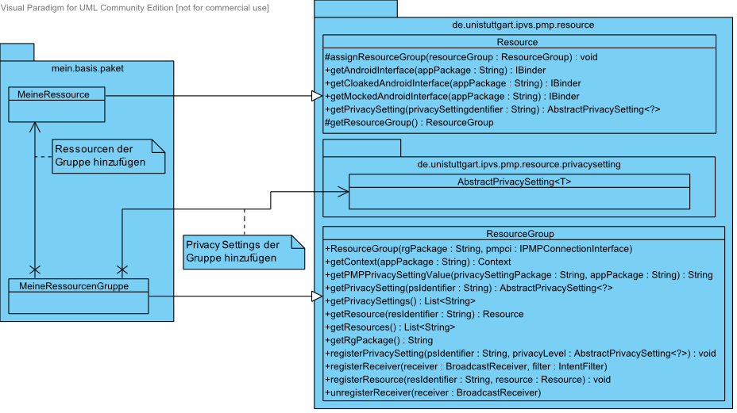{kind=link}
Ressourcen bilden die Grundlage einer Ressourcengruppe. Jede Gruppe benötigt
mindestens eine Ressource. Die Basisklasse einer Ressource bildet
Resource.
Um eigene Ressourcen zu erstellen, wird diese erweitert. Anschließend müssen
die Methode getAndroidInterface(), getMockedAndroidInterface()
sowie getCloakedAndroidInterface() implementiert werden.
Zunächst wird ein AIDL-Interface erstellt, das die für Applikationen sichtbaren Funktionen der Ressource beinhaltet (etwa Datei lesen). Nachdem das Android-SDK aus diesem Interface automatisch ein Stub erstellt hat, wird dieses drei mal implementiert, um abhängig vom Modus verschiedene Daten zu liefern (siehe auch ):
- Eine Implementierung, die die korrekten Daten zurück liefert
- Eine Implementierung, die die Daten vor der Rückgabe verändert
- Eine Implementierung, die zufällige Daten zurück liefert
getAndroidInterface()
besteht nun ausschließlich darin, die Implementierung zurück zu geben, die
die korrekten Daten liefert, während über getMockedAndroidInterface()
und getCloakedAndroidInterface() Implementierungen zurück gegeben
werden, die die Daten verändern bzw. zufällige Daten generieren.
Hierdurch erhalten Applikationen Zugriff auf die Funktionen der Ressource.
Über den Parameter wird jeweils ein String übergeben, durch den die auf die Ressource
zugreifende Applikation identifiziert wird. Dieser sollte an die Implementierung des
AIDL-Interface weitergereicht werden, damit diese prüfen kann, ob die
Applikation zum Zugriff auf die einzelnen Funktionen berechtigt ist.
Jede Ressource ist dafür verantwortlich, dass eine von ihr angebotene
Funktion nur ausgeführt wird, wenn das entsprechende Privacy Setting
gesetzt ist. Hierzu bietet die zu erweiternde Klasse Resource
die Methode getPrivacySetting(). Dieser wird der Name das abzufragenden
Privacy Settings übergeben (siehe )
und liefert, wenn das Privacy Setting existiert, eine Referenz auf dieses
zurück. Über die Methode permits() lässt sich dann abfragen ob
das entsprechende Privacy Setting gesetzt ist.
Ist das Ausführen der Funktion nicht möglich, da das dafür nötige
Privacy Setting nicht gesetzt ist, kann die Ressource eine SecurityException
werfen. Innerhalb der Funktions-Implementierung dürfen keine anderen
Exception-Typen geworfen werden, da dies zu einem Absturz führen kann.
Erstellen einer Ressourcengruppe
Die erstellten Ressourcen müssen einer Ressourcengruppe hinzugefügt werden.
Hierzu wird eine neue Klasse erstellt, die die Klasse ResourceGroup
erweitert.
Damit Anwendungen auf die Ressourcengruppe zugreifen können, muss eine
Identifikation der Gruppe geliefert werden.
Diese Identifikation muss mit dem Wert übereinstimmen, der zuvor im
RGIS festgelegt wurde (siehe ).
Hierzu wird ein Konstruktor angelegt, der als Parameter genau ein Objekt
vom Typ IPMPConnectionInterface erhält.
Innerhalb dieses Konstruktors muss dann der Konstruktor der Basisklasse RessourceGroup
aufgerufen werden, wobei neben einer Referenz auf das erhaltene
IPMPConnectionInterface-Objekt eben diese Identifikation
übermittelt wird.
Unter Berücksichtigung des oben Erwähnten, könnte eine Ressourcengruppe wie folgt aussehen:
public class Filesystem extends ResourceGroup {
public static final String PACKAGAE_NAME =
"de.unistuttgart.ipvs.pmp.resourcegroups.filesystem";
public Filesystem(IPMPConnectionInterface pmpci) {
super(PACKAGAE_NAME, pmpci);
...
}
}
Hinzufügen der Ressourcen zur Gruppe
Innerhalb der erstellten Ressourcengruppe werden durch Aufruf der
Methode registerResource() die erstellten Ressourcen der
Gruppe zugeordnet. Um einen späteren Zugriff auf die einzelnen Ressourcen
zu ermöglichen, wird neben der Referenz auf die Ressource noch ein String-Kürzel
mit übergeben. Dieses Kürzel sollte in eine Konstante ausgelagert werden um
Fehler beim Zugriff durch Tipp-Fehler oder einen veränderten Wert auszuschließen.
Es muss darauf geachtet werden, dass das String-Kürzel eindeutig ist.
Eine bereits registrierte Ressource wird überschrieben, sollte eine
Ressource mit gleichem Kürzel hinzugefügt werden.
Beinhaltet die Gruppe sehr viele Ressourcen, sollte über eine Auslagerung der Ressourcen-Instanziierung und der String-Konstanten in eine separate Klasse nachgedacht werden.
public class Filesystem extends ResourceGroup {
public static final String PACKAGAE_NAME =
"de.unistuttgart.ipvs.pmp.resourcegroups.filesystem";
public Filesystem(IPMPConnectionInterface pmpci) {
super(PACKAGAE_NAME, pmpci);
...
registerResource("gen", new GenericResource());
...
}
...
}
Hinzufügen der Privacy Settings zur Gruppe
Ähnlich der Ressourcen werden die erstellten Privacy Settings durch
registerPrivacySetting() der Gruppe hinzugefügt.
Auch hier wird zur Referenzierung ein String-Kürzel mit angegeben, das
ebenfalls in eine Konstante ausgelagert werden sollte. Dieses
Kürzel muss mit dem Übereinstimmen, das für das betreffende Privacy Settings
im RGIS festgelegt wurde
(siehe ).
Da eine Gruppe viele Privacy Settings enthalten kann, kann auch hier eine Auslagerung der Objekt-Instanziierung in eine eigene Klasse sinnvoll sein.
public class Filesystem extends ResourceGroup {
public static final String PACKAGAE_NAME =
"de.unistuttgart.ipvs.pmp.resourcegroups.filesystem";
public Filesystem(IPMPConnectionInterface pmpci) {
super(PACKAGAE_NAME, pmpci);
...
registerPrivacySetting("gen_r", new BooleanPrivacySetting());
registerPrivacySetting("gen_w", new BooleanPrivacySetting());
...
}
...
}
Über den zweiten Parameter wird der Typ des Privacy Settings festgelegt.
Um den
Implementierungsaufwand zu verringern, bietet die API für häufig wiederkehrende
Einsatzgebiete im Packet de.unistuttgart.ipvs.pmp.resource.privacysetting.library
Standartimplementierungen für häufig benötigte Privacy Settings an. Mehr Informationen
hierzu finden sie in der API-Dokumentation.
Für Wahrheitswerte
Handelt es sich um ein Privacy Settings, das als Einstellungswert ausschließlich
einen Wahrheitswert ("Ja"/"Nein") erlaubt (z. B. "lesen erlauben"), so
sollte für das Privacy Setting die fertig implementierte Klasse
BooleanPrivacyLevel verwendet werden.
Benutzerdefiniert
Sollte die Erstellung eines benutzerdefinierten Privacy Settings erforderlich
sein, d. h. das Privacy Setting lässt sich nicht durch eine bestehenden
Implementierung realisieren, so lässt sich ohne weiteres ein eigenes
Privacy Setting implementieren. Hierzu muss die Klasse
PrivacySetting erweitert und ihre abstrakten Methoden
implementiert werden. Eine Liste aller zu implementierenden Methoden und
deren Aufgaben entnehmen Sie bitte der API-Dokumentation.
Applikationen
Das Erstellen von mit der PMP kompatiblen Applikationen unterteilt sich grob in das Definieren der von der Applikation angebotenen Service-Levels und dem Implementieren der Anwendungslogik.
Ausführliche Beispiele zur Festlegung der Service-Levels und zur Implementierung einer Applikation finden Sie in den mitgelieferten Beispiel-Applikationen, zu denen der Quellcode verfügbar ist.
App Information Set
Jede Applikation, die in die PMP eingebunden wird, besitzt ein
"App Information Set" (nachfolgend als AIS abgekürzt).
Diese XML-Datei trägt den Namen ais.xml und
muss sich im asset Verzeichnis der Applikation befinden.
Über diese Datei werden u. a. Informationen über die Applikation hinterlegt
sowie die von der Applikation angebotenen Service Features definiert.
Der Aufbau der Definitions-Datei folgt dem Schema:
<?xml version="1.0" encoding="utf-8"?>
<appInformationSet>
<appInformation>
<!-- Informationen über diese Applikation (siehe ) -->
...
</appInformation>
<serviceFeatures>
<!-- Liste der angebotenen Service-Features (siehe ) -->
...
</serviceFeatures>
</appInformationSet>
Mit dem "Editor for Information Sets" steht ein PlugIn für die Entwicklungsumgebung Eclipse bereit, mit dem das AIS über eine einfach zu bedienende Oberfläche erstellt und bearbeitet werden kann.
Informationen
Der Informations-Abschnitt enthält Elemente, über die detaillierte Informationen zur Applikation hinterlegt werden:
- Über das Element
namewird der Name der Applikation festgelegt. Jedes Element muss das Attributlangbesitzen, über das die Sprache festgelegt wird, in die der Name verfasst wurde. Ein Eintrag mit derlang"en" muss zwingend vorhanden sein. - Über das Element
descriptionwird die Beschreibung der Applikation festgelegt. Jedes Element muss das Attributlangbesitzen, über das die Sprache festgelegt wird, in die die Beschreibung verfasst wurde. Ein Eintrag mit derlang"en" muss zwingend vorhanden sein.
<appInformation>
<name lang="en">Calendar</name>
<name lang="de">Kalender</name>
<description lang="en">
This App is used to test the privacy management platform. It provides simple
calendar functionalities.
</description>
<description lang="de">
Die App wird verwendet um die Privacy Manangement Platform zu testen. Sie stellt
einfache Funktionalitäten eines Kalenders zur Verfügung.
</description>
</appInformation>
Service Features
Die von der Applikation angebotenen Service Features werden im Abschnitt
serviceFeatures notiert. In diesem Abschnitt wird für jedes angebotene
Service Feature ein Abschnitt serviceFeature angelegt:
- Über das Attribut
identifierwird dem Service Feature ein String zugewiesen, über den das Service Feature in der Applikation und innerhalb der PMP eindeutig referenziert werden kann. Daher ist es wichtig, dass innerhalb des AIS zu jedemidentifiermaximal ein Service Feature definiert wird. - Über das Element
namewird der Name des Service-Features festgelegt. Jedes Element muss das Attributlangbesitzen, über das die Sprache festgelegt wird, in die der Name verfasst wurde. Ein Eintrag mit derlang"en" muss zwingend vorhanden sein. - Über das Element
descriptionwird die Beschreibung des Service Features festgelegt. Jedes Element muss das Attributlangbesitzen, über das die Sprache festgelegt wird, in die die Beschreibung verfasst wurde. Ein Eintrag mit derlang"en" muss zwingend vorhanden sein. - Zuletzt existiert noch ein Abschnitt
requiredResourceGroup. Dieser legt fest, welche Ressourcengruppen von dem entsprechenden Service Feature benötigt werden. Hierzu folgt der Abschnitt diesem Aufbau:- Über das Attribut
identifierwird die Ressourcengruppe festgelegt, die vom Service Feature benötigt wird. Dieser String ist für jede PMP-Ressourcengruppe eindeutig festgelegt und ist mit dem gleichnamigen Attribut im RGIS der gewünschten Ressourcengruppe identisch (siehe auch ). - Über das Attribut
minRevisionwird die Version der Ressourcengruppe festgelegt, die vom Service Feature benötigt wird. Hierbei handelt es sich um das Datum, an dem die benötigte Version veröffentlicht wurde. - Über mindestens ein Element
requiredPrivacySettingwird definiert, welches Privacy Settings der Ressourcengruppe auf welchen Wert (bei Verwendung des Service Features) gesetzt werden muss. Das Attributidentifierentspricht hierbei dem gleichnamigen Attribut im RGIS der gewünschten Ressourcengruppe (siehe auch ). Über den Wert des Elements wird festgelegt, auf welchen Wert das entsprechende Privacy Setting gesetzt sein muss.
- Über das Attribut
<serviceFeatures>
<serviceFeature identifier="read">
<name lang="en">Show entries</name>
<name lang="de">Termine anzeigen</name>
<description lang="en">Calendar entries can be displayed.</description>
<description lang="de">Kalendereinträge können angezeigt werden.</description>
<requiredResourceGroup identifier="de.unistuttgart.ipvs.pmp.resourcegroups.database"
minRevision="2012-02-16 14:46:55 GMT+01:00">
<requiredPrivacySetting identifier="read">true</requiredPrivacySetting>
<requiredPrivacySetting identifier="allowedDatabases">
appointments
</requiredPrivacySetting>
</requiredResourceGroup>
</serviceFeature>
<serviceFeature identifier="write">
<name lang="en">Create entries</name>
<name lang="de">Termine hinzufügen</name>
<description lang="en">Calendar entries can be added or changed.</description>
<description lang="de">
Kalendereinträge können hinzugefügt oder bearbeitet werden.
</description>
<requiredResourceGroup identifier="de.unistuttgart.ipvs.pmp.resourcegroups.database"
minRevision="2012-02-16 14:46:55 GMT+01:00">
<requiredPrivacySetting identifier="modify">true</requiredPrivacySetting>
<requiredPrivacySetting identifier="create">true</requiredPrivacySetting>
<requiredPrivacySetting identifier="allowedDatabases">
appointments
</requiredPrivacySetting>
</requiredResourceGroup>
</serviceFeature>
...
</serviceFeatures>
Service hinzufügen
Zentraler Punkt der Kommunikation zwischen Applikationen und PMP ist der
so genannte AppService. Dieser regelt die Integration der
Applikation in die PMP und verwaltet deren Service Features.
Die Funktionen dieses Services sind bereits fertig implementiert und in
die PMP integriert, so dass nur die anwendungsspezifischen Funktionen
durch den Entwickler der Applikation festgelegt werden müssen.
Zunächst muss der Service in der Manifest-Datei bekannt gemacht werden. Hierzu wird der Datei folgender Service hinzugefügt:
<service android:name="de.unistuttgart.ipvs.pmp.service.app.AppService">
<intent-filter>
<action android:name="»Applikationsspezifischer Service-Name«" />
</intent-filter>
</service>
Einzig variabler Wert ist hier der Name der Aktion innerhalb des Intentfilters
("»Applikationsspezifischer Service-Name«"). Der Wert dieses
Attributes wird im weiteren Verlauf der Implementierung noch benötigt.
Dieser Wert sollte auf den Namen des Basis-Paketes gesetzt werden, unterhalb
dessen sich alle Klassen der Applikation befinden (Befinden sich alle
Klassen unterhalb von de.unistuttgart.ipvs.pmp.apps.ournewapp,
sollte der Eintrag <action android:name="de.unistuttgart.ipvs.pmp.apps.ournewapp" /> lauten).
Damit sich die Applikation beim ersten Ausführen bei der PMP registrieren
kann, muss in der Manifest-Datei in der Start-Activity die Klasse
de.unistuttgart.ipvs.pmp.api.gui.registration.RegistrationActivity
eingetragen werden. Über eine weitere Activity wird die eigentliche
Hauptklasse/-activity festegelegt:
<activity
android:name="de.unistuttgart.ipvs.pmp.api.gui.registration.RegistrationActivity"
android:label="@string/app_name" >
<intent-filter>
<action android:name="android.intent.action.MAIN" />
<category android:name="android.intent.category.LAUNCHER" />
</intent-filter>
<meta-data android:name="mainActivity"
android:value="de.unistuttgart.ipvs.pmp.apps.calendarapp.gui.activities.CalendarAppActivity" />
</activity>
<activity android:name=".gui.activities.CalendarAppActivity"
android:label="@string/app_name" >
</activity>
Dienste der PMP
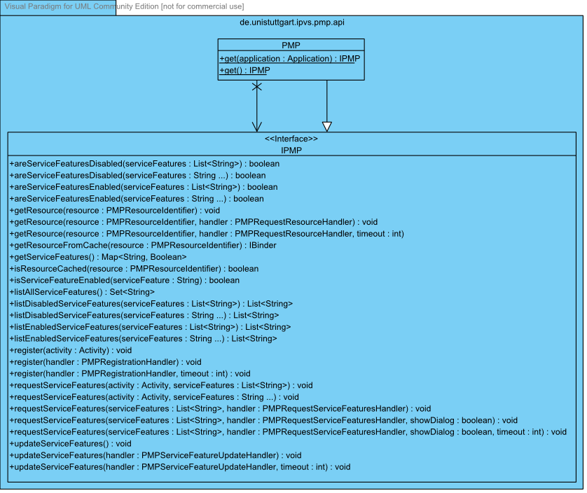{kind=link}
Um jederzeit auf Dienste der PMP Zugreifen zu können, bietet die Klasse
PMP der API mit der statischen Methode get()
Zugriff auf die Funktionen und Ressourcen der PMP.
Damit die PMP die API der anfordernden Applikation anpassen (z. B.
durch Einlesen der Service Feature) und die Applikationen unterscheiden kann, muss
dieser Methode mindesten beim ersten
Aufruf eine Referenz auf die Klasse übergeben werden, die die Klasse
Application der Android-API implementiert.
Registrierung
Jede Applikation muss sich bei der PMP registrieren. Hierzu bietet die
API IPMP die überladene Methode register() an.
Dieser kann eine eigene Implementierung des PMPRegistrationHandler()
übergeben werden, über die auf eine erfolgreiche oder fehlgeschlagene
Registrierung reagiert werden kann.
Da die Methoden des Handlers weitestgehend
selbsterklärend sind, soll an dieser Stelle auf eine nähere Beschreibung
verzichtet werden. Mehr Informationen dazu finden Sie in der API-Dokumentation.
Service Features
Mit der Methode isServiceFeatureEnabled() der
IPMP-API lässt sich überprüfen, ob vom
Benutzer ein bestimmtes Service Feature gesetzt wurde. Der hierfür übergebene
String muss mit dem zugehörigen identifier des AIS übereinstimmen
(siehe ).
Werden mehrere Service Features gleichzeitig benötigt, kann mit
areServiceFeaturesEnabled oder
areServiceFeaturesDisabled() geprüft werden, ob all diese
aktiviert bzw. deaktiviert sind.
Um den Zwischenspeicher der Service Features zu aktualisieren bzw. die
Service Features der Applikation einzulesen, sollte vor dem Abfragen
(etwa in onResume() der entsprechenden Activity), möglichst jedoch nicht zu oft,
die Methode updateServiceFeatures() aufgerufen werden.
Ist ein Service Feature nicht gesetzt, dass von der Applikation jedoch
benötigt wird, kann dem Benutzer mit der Methode
requestServiceFeatures ein Dialog
(siehe auch ) angezeigt werden.
Über diesen kann das Service Feature dann auf Wunsch aktiviert werden.
Ressource
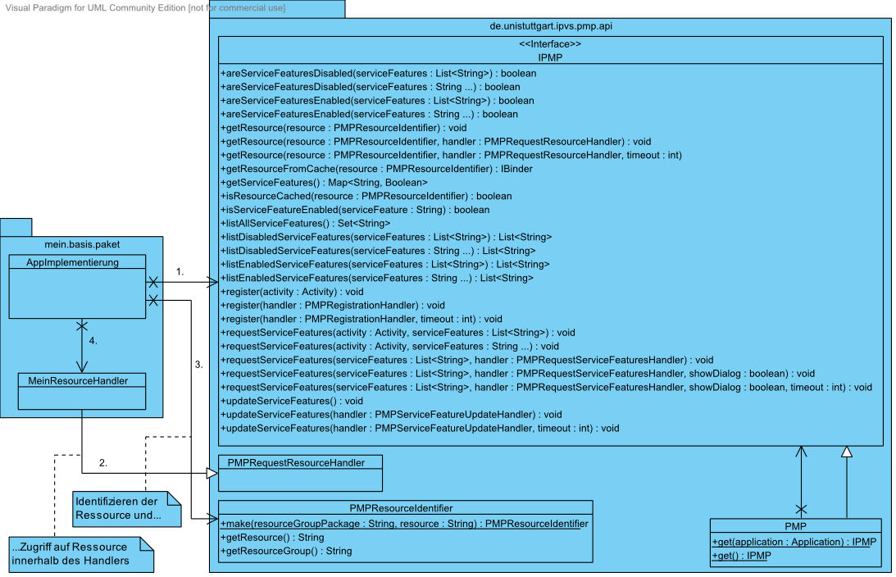{kind=link}
Zugriffe auf Ressourcen erfolgt über die Methode getResource()
der IPMP.
Diese Methode erwartet einen PMPResourceIdentifier, über den
die Ressourcengruppe eindeutig identifiziert werden kann.
Dieser wird mit der statischen Methode make() der Klasse
PMPResourceIdentifier erstellt. Der
hierfür erwartete Identifier der Ressourcengruppe muss mit dem in der
RGIS eingetragenen Wert übereinstimmen
(siehe ).
Über den zweiten Parameter wird die eigentliche, benötigte Ressource
der Gruppe spezifiziert. Dieser muss mit dem in der Ressource
festgelegten Identifier übereinstimmen
(siehe ).
Neben dem PMPResourceIdentifier wird der
getRessource() eine Eigen-Implementierung des
PMPRequestResourceHandler übergeben.
Dessen Callback-Methode onReceiveResource() wird von der
PMP aufgerufen. War die Abfrage erfolgreich, so wird in binder
ein IBinder-Object zurückgeliefert (andernfalls null).
Die Ressourcengruppe, die angefordert wird, darf nicht
in den Klassenpfad (Classpath) übernommen werden. Um das durch
getResource() zurück gegebene Objekt korrekt casten zu
können, muss daher das entsprechende AIDL-Interface aus der Ressourcengruppe
heraus kopiert und in das Paket der Applikation übernommen werden.
Nachdem das Objekt dann auf dieses Interface gecastet wurde, ist der
Zugriff auf die Funktionen der Ressource möglich (vorausgesetzt, das
entsprechende Privacy Setting ist gesetzt):
PMP.get().getResource(PMP_IDENTIFIER, new PMPRequestResourceHandler() {
@Override
public void onReceiveResource(PMPResourceIdentifier resource, IBinder binder) {
if (binder != null) {
IDatabaseConnection idc = IDatabaseConnection.Stub.asInterface(binder);
...
idc.query(...);
...
}
}
});
Versionshistorie
Version 4.2 (29.05.2012)
- Anpassung des Entwicklerkapitels abgeschlossen.
Version 4.1 (28.05.2012)
- Anpassung des Anwenderkapitels abgeschlossen.
- Beginnen der Anpassung des Entwicklerkapitels an aktuelle Iteration.
Version 4.0 (23.05.2012)
- Beginnen der Anpassung des Anwenderkapitels an aktuelle Iteration.
Version 3.4 (19.01.2012)
- Überarbeitete Klassen-Diagramme zum Entwicklerkapitel hinzugefügt.
Version 3.3 (18.01.2012)
- Anpassung des Entwicklerkapitels abgeschlossen.
Version 3.2 (16.03.2012)
- Beginnen der Anpassung des Entwicklerkapitels an aktuelle Iteration.
Version 3.1 (12.03.2012)
- Anpassung des Anwenderkapitels abgeschlossen.
Version 3.0 (09.03.2012)
- Beginnen der Anpassung des Anwenderkapitels an aktuelle Iteration.
Version 1.3 (12.01.2012)
- Anpassung des Entwicklerkapitels abgeschlossen.
Version 1.2 (07.01.2012)
- Anpassung des Anwenderkapitels abgeschlossen.
Version 1.1 (30.12.2011)
- Beginnen der Anpassung des Anwenderkapitels an aktuelle Iteration.
Version 1.0 (01.10.2011)
- Letzte Prüfung des Handbuchs. Alle Kapitel fertig gestellt. Stand: 1. Iteration
Version 0.5 (29.09.2011)
- Mit Spezifikation abgeglichen, fehlende Abschnitte hinzugefügt
Version 0.4 (28.09.2011)
- Bildschirmfotos hinzugefügt und Anwenderkapitel überarbeitet
Version 0.3 (26.09.2011)
- Kapitel zur Entwicklung von Applikationen hinzugefügt
Version 0.2 (24.09.2011)
- Kapitel zu Grundbegriffen hinzugefügt
Version 0.1 (20.09.2011)
- Kapitel zur Ressourcen-Entwicklung fertig gestellt